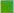
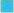
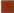

Das älteste bekannte Anschlagmittel ist das Faserseil. Es entsteht durch Verseilen, durch Flechten oder Umhüllen von gelegten Einzelfasern.
Als Werkstoffe wurden früher die pflanzlichen Faserstoffe Hanf, Sisal oder Manila für die Herstellung von Seilgarnen verwendet. Heute sind diese natürlichen Fasern überwiegend durch synthetische Fasern aus Polyamid, Polyester oder Polypropylen ersetzt.
Diese synthetischen Fasern sind unter Handelsnamen wie Nylon, Perlon, Diolen, Trevira, Vestan bekannt.
Unterscheidungsmöglichkeiten der verschiedenen Natur- und Kunstfaserstoffe
Da die Faserstoffe erhebliche Unterschiede in ihrer Festigkeit aufweisen, ist es erforderlich, die daraus gefertigten Seile zu kennzeichnen:
Durch nationale und internationale Normung sind folgende Farben der Kennfäden festgelegt: |
||
 |
grün | Hanf |
| rot | Sisal | |
| schwarz | Manila | |
| grün | Polyamid | |
 |
blau | Polyester |
 |
braun | Polypropylen |
Die Kennfarben grün für Hanf- und Polyamidseile führen nicht zu Verwechslungen, da sich die Seile durch die Oberflächenstruktur augenfällig unterscheiden.
Die Festigkeit von Polypropylenseilen ist je nach gewählter Sorte sehr verschieden. Es ist daher wichtig, dass vor der Anwendung die Zuordnung zu den jeweiligen Festigkeitstabellen erfolgt.
Polyethylenseile (oranger Kennfaden) sind nicht zum Heben geeignet, da das Material bei Dauerbelastung fließt.
Siehe auch BG-Regel „Gebrauch von Anschlag-Faserseilen“ (BGR 152) und DIN EN 1492 „Textile Anschlagmittel – Sicherheit“, Teil 4 „Anschlag-Faserseile für allgemeine Verwendung aus Natur- und Chemiefaserseilen“ (04/04).